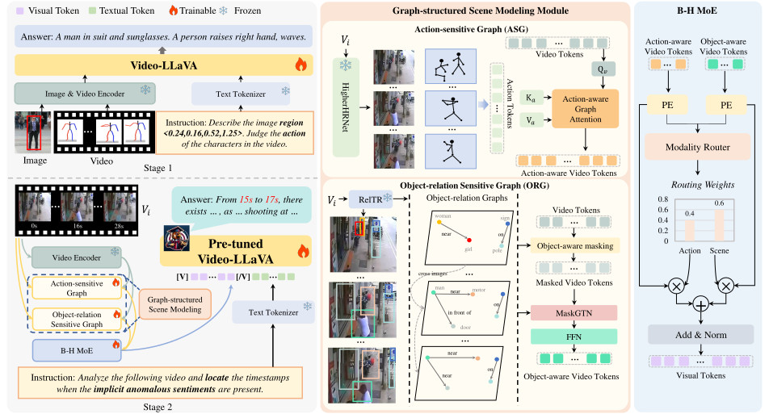

Selected Research
Multi-Agent System for Structured Information Extraction and Generation

This research focuses on advancing Text-to-SQL parsing by addressing the critical challenge of semantic accuracy in LLM-generated SQL queries. While fine-tuned large language models excel at producing syntactically valid SQL, they often struggle with semantic consistency, leading to unreliable results in real-world applications.
To tackle this issue, we introduce SQLFixAgent (Cen et al., AAAI'2025), a novel multi-agent collaborative framework designed to detect and repair erroneous SQL queries. SQLFixAgent integrates three specialized agents: 1) SQLReviewer: Identifies semantic mismatches using rubber duck debugging principles. 2) QueryCrafter: Generates diverse candidate SQL repairs by perturbing user queries. 3) SQLRefiner: Selects the optimal repair through retrieval-augmented reflection and failure memory.
This framework achieves a 3% improvement in execution accuracy on the challenging BIRD benchmark while maintaining high token efficiency, making it practical for deployment. Beyond this, we investigate robust Text-to-SQL parsing across diverse scenarios, including domain knowledge integration (Spider-DK) and synonym robustness (Spider-Syn). Our work also explores the synergy between fine-tuned and foundation LLMs, demonstrating how agent collaboration can compensate for individual model limitations. In addition, we propose Table-Critic (Yu et al., ACL'2025), a novel multi-agent framework designed to enhance structured table reasoning through collaborative error detection and refinement. While large language models (LLMs) excel in many reasoning tasks, they often struggle with maintaining consistency in multi-step table-based reasoning, leading to cascading errors. Table-Critic demonstrates how structured collaboration among LLM-based agents can overcome inherent limitations in complex reasoning tasks, offering a scalable and interpretable approach for real-world applications in data analysis and decision support.Papers: [Cen et al., AAAI'2025] [Code] [PDF], [Yu et al., ACL'2025] [Code] [PDF]
Multimodal Foundation Model for Video Understanding and Grounding

The goal is to establish a unified framework for video anomaly detection, advancing precision in identifying and localizing abnormal events across dynamic scenes while enabling interpretable analysis of complex visual patterns.
Starting from real-world applications in surveillance and social media analysis, we introduce Hawkeye (Zhao et al., ACM MM'24) , the first scene-enhanced video-language model designed for anomaly detection. Hawkeye integrates multimodal context (visual-textual-temporal cues) to recognize subtle anomalies and pinpoint their temporal boundaries in untrimmed videos, This work lays a critical foundation for event typing and spatiotemporal localization in short video understanding.
Building on this, we investigate low-resource scenarios where annotated anomaly data is scarce. Our Continuous Attention Modeling method (Zhang et al., JOS'23) enhances adaptability by capturing long-range dependencies in sparse anomaly signals. Further, we extend Hawkeye with self-supervised learning to uncover latent patterns across unlabeled videos, improving generalization to unseen anomaly types. To scale solutions, we construct a benchmark suite combining large-scale anomaly annotations and instruction-tuned datasets. This addresses the challenge of diverse event types (e.g., accidents, unusual behaviors) and supports downstream tasks like explainable reasoning.
Papers: [Zhang et al., JOS'23], [Zhao et al., ACM MM'24 ] [Code] [PDF]